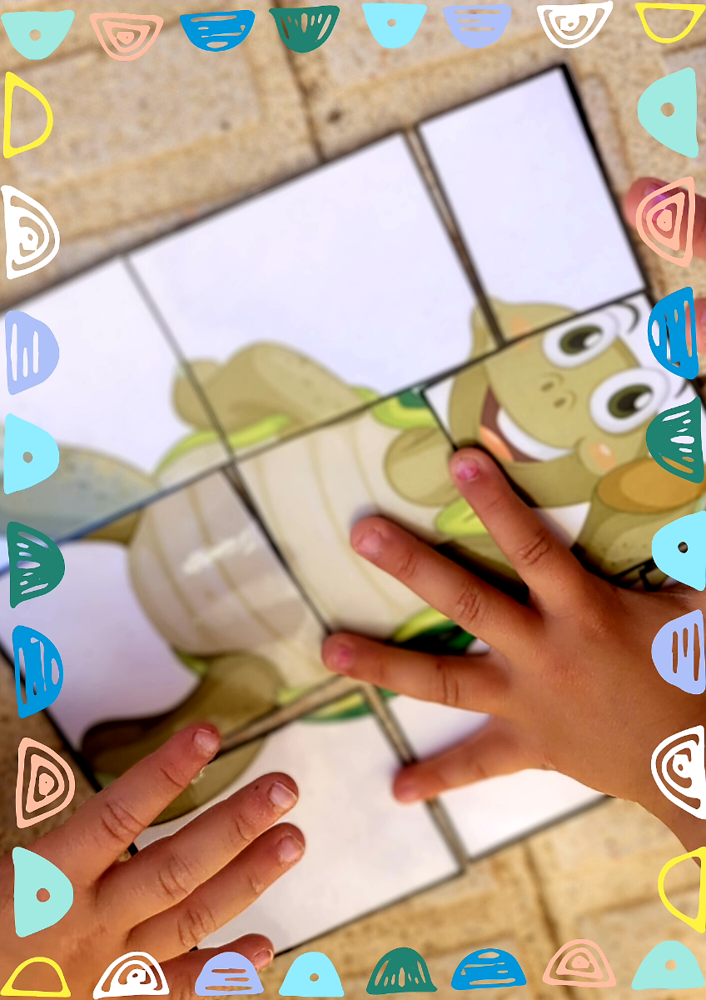

¿Qué vamos a hacer?
A continuación, vamos a ver las distintas tareas que vamos a llevar a cabo en las diferentes secciones de este recurso:
El agua en la naturaleza
En un primer momento debemos conocer en qué lugares de nuestro planeta encontramos agua y en qué diversidad de formas.

Aprendemos sobre este tema observando una presentación introductoria.
A continuación comprobaremos lo aprendido realizando un juego de parejas, con imágenes de lugares donde se puede encontrar agua en el planeta, además de asociar palabras relacionadas en mayúscula según nuestro trabajo en el aula.
Es hora de terminar y qué mejor forma que disfrutando de un vídeo cuento. Nos atrevemos a escucharlo con los ojos cerrados para hacer volar nuestra imaginación y soñar que nos encontramos en una playa cerca del mar. Podemos pedir a nuestro/a maestro/a que lo vuelva a poner, esta vez con los ojos abiertos descubrimos la belleza de esta narración y sus ilustraciones.
¿Creemos que nuestra amiga "Pita" ha terminado su viaje en el conocimiento sobre lo que es el agua?, ¡esto no acaba más que empezar!, así que continuamos acompañándola y tendremos que tener en cuenta también la rúbrica: El agua en la naturaleza, para evaluar todo lo aprendido en este viaje.
Animales y plantas
En primer lugar nuestra amiga Pita nos va a enseñar, a través de una presentación, qué animales y plantas viven en el agua y cómo son sus cuerpos para que esto sea posible.
A continuación, vamos a realizar un juego de adivinanzas, donde tendremos que adivinar de quién es la sombra que aparece en cada dibujo, para ello pulsamos el clic y comenzamos a jugar.
Después, veremos un cuento que, como antes, escucharemos con los ojos cerrados y, más tarde, lo volveremos a reproducir para descubrir con los ojos abiertos, la belleza de esta narración y sus ilustraciones.
Y para finalizar, realizaremos un juego que nos ayudará a comprobar todo lo que hemos aprendido sobre los animales y las plantas acuáticas, uniendo parejas.
No perdamos de vista la rúbrica: Animales y plantas y sigue acompañando a Pita en este viaje tan interesante sobre el agua.
Los estados del agua
En el primer apartado, nuestro personaje tan increíble como es Agapita, nos va a dar a conocer, a través de un pequeño cuento-vídeo, los distintos estados del agua como son: sólido, líquido y gaseoso.
Para que no nos aburramos, vamos a cantar un poquito con nuestra amiga tortuga, que nos ha preparado una canción muy divertida sobre los estados que puede tener el agua.
Avanzaremos con una pequeña infografía que nos ayudará a entender mejor el tema que estamos viendo.
Seguimos con los juegos, que nos ayudarán a entender mucho mejor este tema tan especial que estamos tratando, ¿estamos preparados y preparadas para ayudar a Agapita a solucionarlos?. Finalizamos con la rúbrica: Los estados del agua
Los deportes acuáticos
El cometido que tenemos es sencillo, necesitamos conocer que es distinto el atuendo en el medio acuático que el del medio físico. Para ello primero vamos a ver las imágenes del material que llevaría a la piscina en una presentación, después vamos a seleccionar si llevamos o no llevamos una serie de materiales que nos van a ir presentado, y luego de manera autónoma vamos a seleccionar cajas en las que aparece el material para el medio acuático. Para terminar tendremos es cuenta la rúbrica: Los deportes acuáticos.
Uso responsable
Para finalizar conoceremos y reflexionaremos sobre la importancia del ahorro del agua. Cometido al que accederemos a través de la música y el vídeo de la canción infantil ¿Qué pasaría si no tenemos agua?
A continuación llevaremos a cabo una puesta en común donde se comentarán y se explicarán las consecuencias de no tener agua y los consejos que debemos seguir para no desperdiciarla.
Por último realizaremos un pequeño juego interactivo donde tendremos que ayudar a un nadador a llegar a la meta aplicando los conocimientos que hemos aprendido. Para finalizar no perdemos de vista la rúbrica: Uso responsable.
English corner
Para saber todavía más, aprenderemos palabras en inglés que hemos utilizado en las diferentes actividades. Podemos visualizar las imágenes a las que hacen referencia dichas palabras, en fotografías e ilustraciones. Pediremos al maestro o maestra que nos las lea y después las repetiremos nosotros.
Terminamos con la rúbrica English Corner que tenemos a continuación.
Puzle de Agapita
Una vez que realicemos todas las actividades, tareas y juegos de este recurso, llevaremos a cabo el puzle colaboratico de Agapita.

Agapita “Pita” creado con Canva
Todos los alumnos y alumnas completarán un puzle con las piezas que consigan al finalizar cada bloque del que consta el recurso. Nuestra mascota "Pita" será una vez más la protagonista.
¿Qué tendremos que hacer?
- Realizar tanteos y pruebas de colocación de las piezas para poder formar adecuadamente la imagen.
- Motivarse y colaborar unos con otros en el logro del objetivo común.
- Completar el "rincón de juego Lógico Matemático", incorporando este nuevo material al mismo y acudir a dicho espacio en el aula, siempre que sea preciso.
¿Estamos animados a aprender y pasarlo muy bien? ¡Pues adelante!